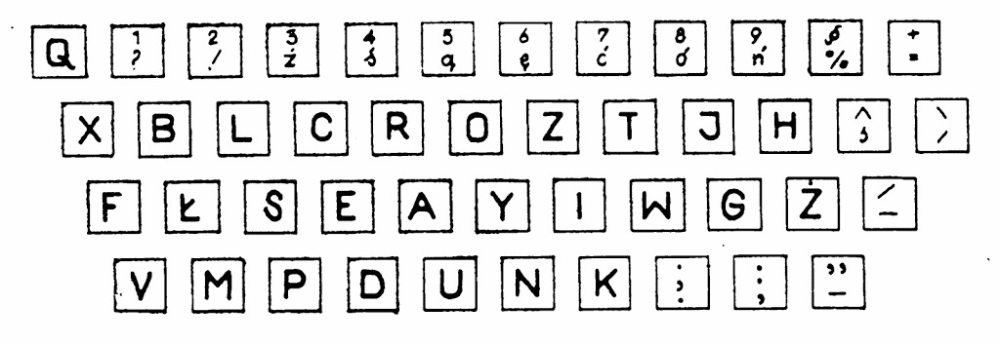
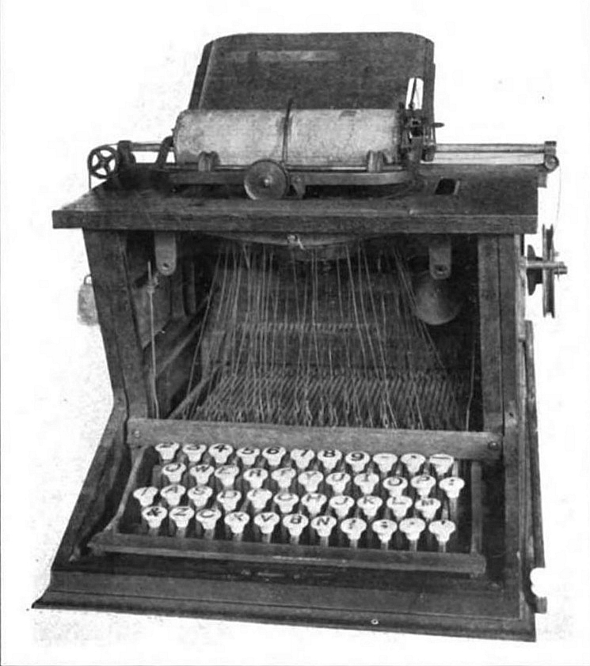
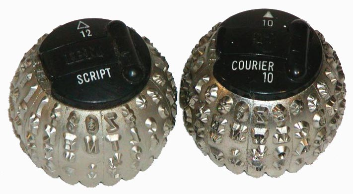
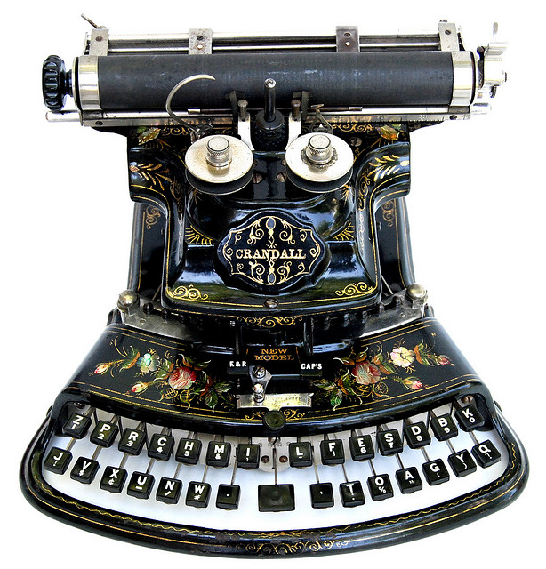

International
InternationalPolski układ klawiatury cz. I.
2012-02-15 | autor: flamenco108Ponieważ oprócz czystej, tekstowej stenografii interesuje mnie stenotypia, a też, przy okazji, że opanowałem sztukę bezwzrokowego klepania, zagadnienia związane z klawiaturami, cieszy mnie fakt, że przekopując się przez archiwa Stenografa Polskiego znalazłem w numerze z kwietnia 1974 artykuł Janusza Kaczmarka nt. polskiego układu klawiatury.

Otóż jeszcze w latach zapiekłego stalinizmu ci bohaterowie walki o naszą, polską biurokrację przedstawili projekt polskiej klawiatury zoptymalizowanej dla naszego języka ojczystego. Z poniżej zamieszczonej tabelki wynikać ma jasno i wprost, że układ zaproponowany przez nich, nazwijmy go roboczo pl.SSiM, pozwala na korzystniejszy rozkład pracy pomiędzy poszczególne palce złożone na klawiaturze maszyny do pisania. A naszym, współczesnym, wypadku - na klawiaturze komputera.
| Porównanie rozkładu liczby uderzeń na poszczególne palce w procentach | |||||
|---|---|---|---|---|---|
| Lewa ręka | Prawa ręka | ||||
| palec | układ | palec | układ | ||
| qwert | proponowany | qwert | proponowany | ||
| mały | 12,8 | 2,3 | mały | 10,2 | 2,8 |
| serdeczny | 9,3 | 5,8 | serdeczny | 11,8 | 5,2 |
| środkowy | 13,4 | 10,3 | środkowy | 13,1 | 10,6 |
| wskazujący | 11,2 | 30,5 | wskazujący | 18,2 | 32,5 |
| 46,7 | 48,9 | 53,3 | 51,1 |
Kto zechce się uważniej przypatrzeć, zauważy ciekawostkę: Otóż układ, nazwijmy go QWERT, bo tyczy się to zarówno współcześnie-światowego, a w rzeczywistości po prostu amerykańskiego, QWERTY, jak i jego wariantu QWERTZ, który adaptowany był w Polszcze przez długie lata, jeszcze i na komputerach, zaprojektowany został w 1872 roku przez niejakiego Sholesa, który wiedziony był pragnieniem, aby wciąż doskonalące się w sztuce szybkiego klepania sekretarki, nie niszczyły jego z takim trudem wyprodukowanych maszyn, a konkretnie czcionek i tych ramiączek, do których czcionki były przyczepione. Otóż zdolne one dziewczęta (głównie) tak znakomicie potrafiły opanować klepaninę, że wkrótce dochodziło do strasznej rzeczy: otóż jedna czcionka nie zdążyła wrócić na swoje miejsce, kiedy już na spotkanie z papierem pędziła następna! Dochodziło do kolizji gdzieś w połowie drogi, czcionki się klinowały, trzeba było dzwonić po serwis, a telefony wtedy drogo kosztowały. I tak to właśnie pan Sholes wymyślił układ QWERTY, znany nam wszystkim znakomicie, którego celem było maksymalne utrudnienie (w przeciwieństwie do ułatwienia) pracy klepaczom maszynowym, aby czcionki nie zasuwały tak szybko jedna po drugiej. Do tego celu zastosował sztukę statystyczną i na podstawie reprezentatywnego korpusu języka angielskiego opracował rozkłady częstości występowania poszczególnych liter i tak je porozkładał na klawiaturze, żeby zawsze było daleko i pod górkę. A do tego nie faworyzował palców silniejszych, co w ówczesnych, mechanicznych maszynach, gdzie klawisz należało nacisnąć mocno, żeby odbił się znak na papierze, stanowić musiało pewne utrudnienie. Sukces odniósł połowiczny: małe paluszki faktycznie niezbyt chciały działać z maszyną do pisania, ale tak samo rzeczy się miały przed jego wynalazkiem. Klepaczki po prostu przechodziły na technikę ośmiopalcową i tyle. Wkrótce znowu zasuwały tak, że aż się czcionki klinowały. Ale że wkrótce nadeszła jedna wojna, później kryzys, później druga wojna, to już jakoś nikomu nie chciało się nad tym zmóżdżać.

Oprócz niejakiego Dvoraka, który łaskaw był spostrzec i pomyśleć, że ten Sholes to idiota jakiś musiał być, bo jakżesz to tak ludziom życie utrudniać, zamiast ułatwiać. I w 1933 roku opatentował układ klawiatury, który w języku angielskim faworyzował zdecydowanie 6 większych i silniejszych palców spoczywających na środkowym rzędzie klawiszy maszyny do pisania. I co? I nic. Pomysł się nie przyjął. I tak dziś, kiedy problem klinowania się czcionek dawno już zniknął (konkretnie w latach 60-tych, kiedy IBM wynalazł kulistą głowicę z czcionkami zamiast ruchomych czcionek na ramionkach, to się nazywało “Selectric”), dalej łaskawi jesteśmy używać kompletnie nieefektywnego układu QWERTY Sholesa z drugiej połowy XIX wieku. To podobno tak samo, jak z samochodami…

Ale wróćmy do spostrzeżeń z tabelki. Otóż tam pokazane są rozkłady “użycia” poszczególnych palców w układzie QWERTZ i proponowanym, pokazanym przeze mnie na samej górze tego artykułu. Zwróćcie uwagę, proszę, na fakt, że rozkład dla QWERTY jest płaski! Z tego wynika hipoteza, że jest on płaski (w granicach błędu statystycznego) dla dowolnego języka, bo polski wobec angielskiego jest kompletnie dowolny. A zatem - geniusz, czy idiota?
Tak czy owak, klawiatury elektryczne, w których siła uderzenia przestała mieć jakieś znaczenie, pojawiły się mniej więcej w tym samym czasie, co głowica Selectric, a w ciągu następnych 2 dekad upowszechniły się elektryczne maszyny do pisania o różnym stopniu komputeryzacji. Tymczasem w naszym kraju mogliśmy się pochwalić rozpoczęciem własnej produkcji maszyn do pisania marki Łucznik (oraz paru innych fabryk broni), całkowicie mechanicznych, czyli niezawodnych, gniotsja, nie łamiotsja, z pozostałości metali użytych do odlewania zamków karabinów i ołowiu do wypełniania płaszczy pocisków. Atoli zanim jeszcze nowoczesny przemysł polski zaczął produkować (na zmianę z czołgami) maszyny do pisania, dzielni innowatorzy na polu stenografii i biuralistyki podjęli odważne, cenne i godne odnotowania inicjatywy.
Ale cofnijmy się nieco i zacznijmy tak jakby ab ovo, czyli najpierw opowiedzmy to i owo, a potem do konkretów. Otóż maszyna do pisania spowodowała zamęt w głowach innowatorów na całym świecie. Pojawiały się różne pomysły, w tym układy klawiatur dla jednorękich (niekoniecznie bandytów). Szukano układu o najmniejszej możliwej liczbie klawiszy, ograniczonej tylko do liter alfabetu i cyfr, ale żeby jak najmniej klawiszy. W ramach jednej czcionki starano się zatem umieścić jak najwięcej znaków, pojawiły się zatem potrójne, a nawet poczwórne czcionki, których dodatkowe znaki uruchamiano operatorami typu podniesienie, przesunięcie szyny. Maszyna marki “Adler” miała zaledwie 30 klawiszy.
To akurat jest Blick, ale też pasuje ;-)
Z drugiej strony pojawiały się monstra o 84 klawiszach, np. “Smith Premier 10A”
Czy to nie ma więcej niż 84 klawisze?
A przecież równolegle z maszyną do pisania narodził się wynalazek stenotypii, co prawda na razie dla języka angielskiego, ale zawsze. Pojawiały się zatem też twory pośrednie, o trudnym do wyobrażenia zastosowaniu

CDN
2012-02-15 autor: flamenco108